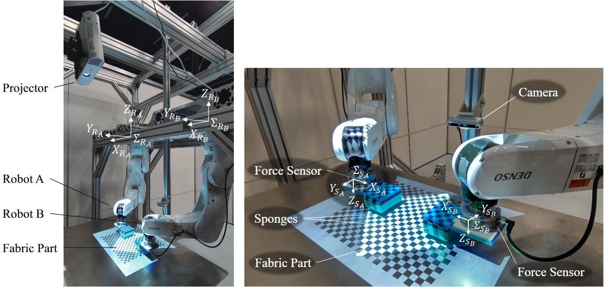

F. Tokuda, A. Seino, A. Kobayashi and K. Kosuge, “CNN-based Visual Servoing for Simultaneous Positioning and Flattening of Soft Fabric Parts,” Proc. IEEE ICRA, pp. 748-754, 2023.

布は位置を動かすと形も変わってしまいます。また無地の布では、普通の画像からしわを読み取るのが難しいという問題があります。
そこで構造化照明を当てて布表面の凹凸を見えやすくし、グレースケール画像と力・トルクの計測値をCNNに入力して、双腕の動作を出力するようにしました。学習用のデータは実機を動かして集めています。
学習データにないしわのある布で、位置決めと平坦化を同時に行えるかを実機で確かめました。